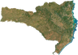

Geoturismo SC
Regiões Turísticas de Santa Catarina
←
Mapa de SC
←
Região
⟲
Visão geral
↻
Girar
◻
Limites
◈
Rótulos

Fundo SC
⛶
Clique em uma região · Arraste para girar · Role para aproximar
Carregando o relevo 3D de Santa Catarina…
Abrindo a foto 360°…
← Voltar ao mapa de SC